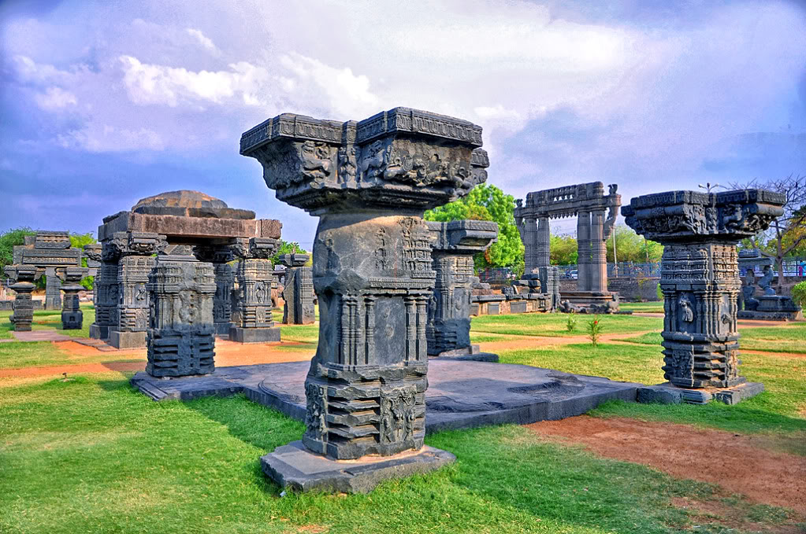

|
|
Warangal |
|

The Warangal Fort has impressive and beautifully carved thoranan arches, and pillars inside are spread over a radius of several hundred meters between Hanamkonda and Warangal, the impregnable fort was popularly known as the seat of power. The fort consists of seven towers , with a radius of 8 kms. The main fort has 45 towers, and a temple of mother earth is in the middle of the fort (Swayam Bhudevi Alayam). A legendary master piece known as Khush Mahal built by Shittabh Khan (Reign 1504-1512 is situated close to the glorious Warangal Fort. Even today, the beautifully carved gateway located within the fort-the famous 'Ekashila'- symbolises the Kakatiya empire and Warangal like the Charminar does for Hyderabad.
Most of the fort is filled with settlements and small area in the center of fort has Open Air Museum with architectural remains
of Kakatiyas. The famous stone gateways (called Kirti Toranas) are situated here, about 30 feet high and still standing,
a masterpiece carved from a single rock.
The Shambhulingeshwara Temple dedicated to Lord Shiva is opposite to Open Air Museum.
Kush Mahal, on the way to Museum houses several sculptures.Timings: 10 AM to 6 PM. Ekasila Hill is located inside Ekasila Children Park opposite to Open Air Museum.
This is one of the marvelous architecture built in the period of Kakatiyas. This mahal resembles like a big hall with big open
windows. It is said like, the direction of air flow into this mahal relieves the tension and headaches of people who sit here and
the people will have a peace of mind. This is considered as one of the speciality of this mahal. Due to this reason, this is named as
"Kush Mahal".
"Kush Mahal" means "Happy (Kush) Palace (Mahal)".
9 AM to 6 PM.
1-2 Hours
5 Kms
Cab / Auto